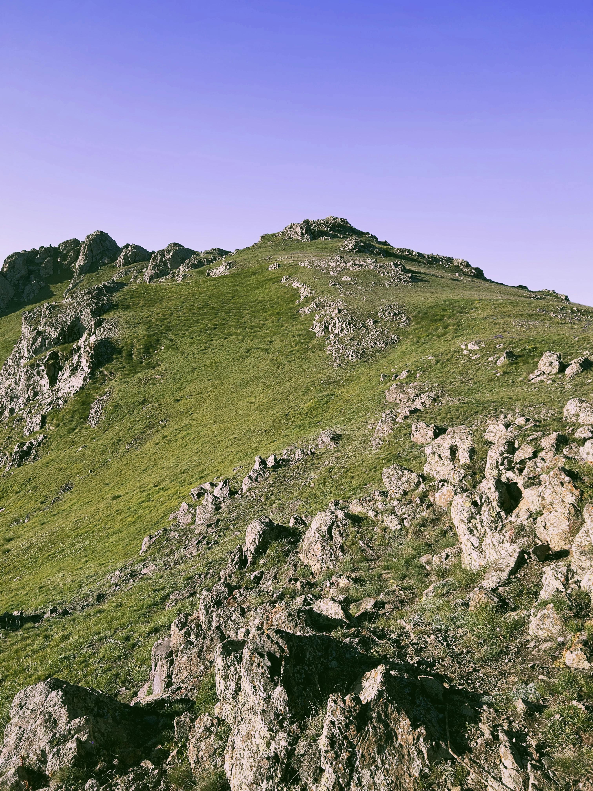
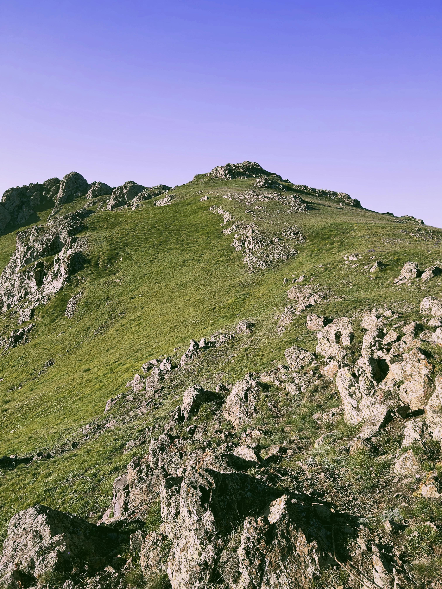

Nature shapes the land in amazing ways. Mountains, rivers, and deserts each have their own patterns, formed by wind, water, and time. These natural patterns show us the power and beauty of Earth’s landscape.
Mountains rise in different shapes and sizes, each with its own layers and lines. These formations tell the story of how the land has changed over time.
Learn moreRivers twist and turn, carving patterns across the land. Each river system has a unique shape that’s created by the flow of water.
Learn moreDeserts are full of sand dunes that form wavy, repeating patterns. These shapes are created by the wind and shift with each breeze.
Learn moreMountains display layered patterns due to centuries of tectonic shifts and erosion, each layer representing different eras.
River deltas spread in fan-like patterns, distributing water and nutrients across wide floodplains.
Sand dunes form crescent, star, and linear shapes depending on wind patterns, with dunes constantly shifting over time.
Salt flats form hexagonal cracks as water evaporates, creating unique geometric designs across the landscape.
Star dunes are found in some deserts and have unique, multi-ridged shapes. These formations change slightly with the seasonal wind patterns.